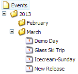
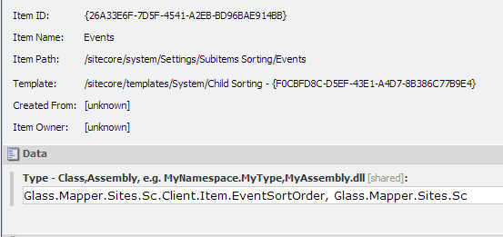
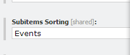
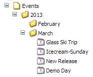

There are times when you want to manipulate and item that is passed into a method rather than one you have loaded from the Sitecore database, good examples of this are the Sitecore workflow and pipelines.
In this tutorial we will create a sort to sort the the events we created in the last tutorial. The current order of our event items are shown below:
These items are not sorted by Start date, we will create a sub-item sorter to ensure that the items are listed in Start date order. Our comparer logic is very straight forward:
The GlassCast method allows you to convert a Sitecore item to a specific type loaded by the default Glass.Mapper context. Data is read directly from the item and not by going back to the database first. It also has a matching extension method called GlassRead that allows you read properties from a class back onto the item.
Now that we have our sort method we just need to define our compare item in Sitecore:
Finally we just need to update the Subitems Sorting field on the standard values field of our Events Folder template:
Now if we look at the order of our events we can see that they have reorganised themselves into the correct order:
In this tutorial you have seen how you can convert an item into a strongly typed object without having to request it from the Sitecore database.